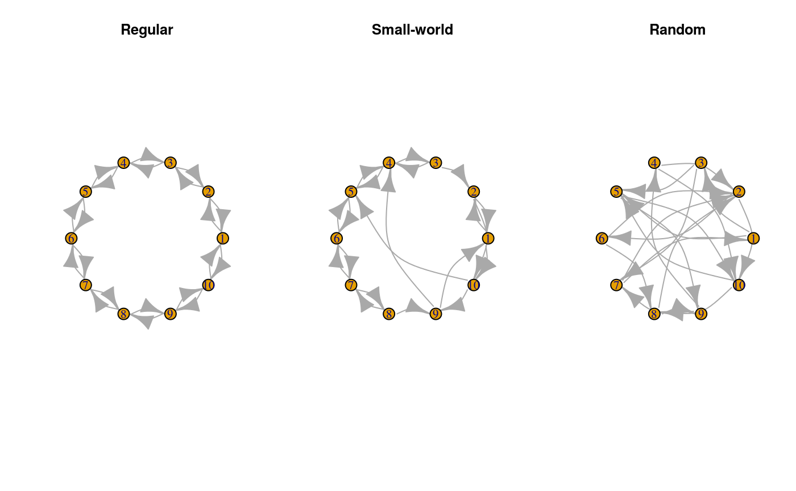

Generates a small-world random graph.
rgraph_ws(n, k, p, both.ends = FALSE, self = FALSE, multiple = FALSE, undirected = FALSE)
| n | Integer scalar. Set the size of the graph. |
|---|---|
| k | Integer scalar. Set the initial degree of the ring (must be less than \(n\)). |
| p | Numeric scalar/vector of length \(T\). Set the probability of changing an edge. |
| both.ends | Logical scalar. When |
| self | Logical scalar. When |
| multiple | Logical scalar. When |
| undirected | Logical scalar. Passed to |
A random graph of size \(n\times n\) following the small-world
model. The resulting graph will have attr(graph, "undirected")=FALSE.
Implemented as in Watts and Strogatz (1998). Starts from an undirected ring with \(n\) vertices all with degree \(k\) (so it must be an even number), and then rewire each edge by setting the endpoint (so now you treat it as a digraph) randomly any vertex in \(N \setminus {i}\) avoiding multiple links (by default) using the rewiring algorithm described on the paper.
Watts, D. J., & Strogatz, S. H. (1998). Collective dynamics of "small-world" networks. Nature, 393(6684), 440–2. http://dx.doi.org/10.1038/30918
Newman, M. E. J. (2003). The Structure and Function of Complex Networks. SIAM Review, 45(2), 167–256. http://doi.org/10.1137/S003614450342480
Other simulation functions: permute_graph,
rdiffnet, rewire_graph,
rgraph_ba, rgraph_er,
ring_lattice
library(igraph) set.seed(7123) x0 <- graph_from_adjacency_matrix(rgraph_ws(10,2, 0)) x1 <- graph_from_adjacency_matrix(rgraph_ws(10,2, .3)) x2 <- graph_from_adjacency_matrix(rgraph_ws(10,2, 1)) oldpar <- par(no.readonly=TRUE) par(mfrow=c(1,3)) plot(x0, layout=layout_in_circle, edge.curved=TRUE, main="Regular") plot(x1, layout=layout_in_circle, edge.curved=TRUE, main="Small-world") plot(x2, layout=layout_in_circle, edge.curved=TRUE, main="Random")par(oldpar)